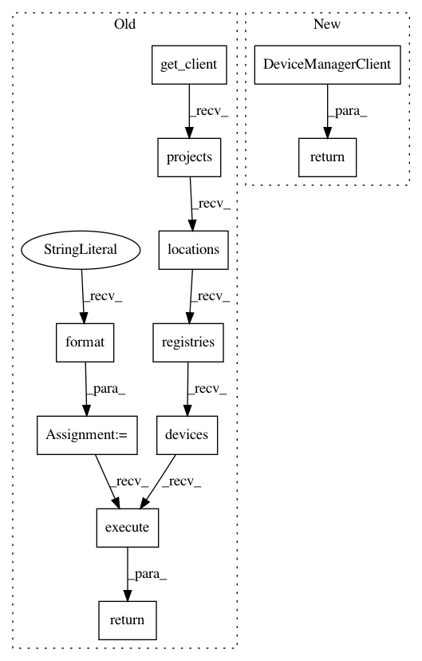

900900b869f3327d932b5fb9bdefcf475b0f7f24,iot/api-client/manager/manager.py,,patch_es256_auth,#Any#Any#Any#Any#Any#Any#,398
Before Change
Patch the device to add an ES256 public key to the device.
// [START iot_patch_es]
print("Patch device with ES256 certificate")
client = get_client(service_account_json)
registry_path = "projects/{}/locations/{}/registries/{}".format(
project_id, cloud_region, registry_id)
with io.open(public_key_file) as f:
public_key = f.read()
patch = {
"credentials": [{
"publicKey": {
"format": "ES256_PEM",
"key": public_key
}
}]
}
device_name = "{}/devices/{}".format(registry_path, device_id)
return client.projects().locations().registries().devices().patch(
name=device_name, updateMask="credentials", body=patch).execute()
// [END iot_patch_es]
def patch_rsa256_auth(
After Change
// [START iot_patch_es]
print("Patch device with ES256 certificate")
client = iot_v1.DeviceManagerClient()
device_path = client.device_path(
project_id, cloud_region, registry_id, device_id)
public_key_bytes = ""
with io.open(public_key_file) as f:
public_key_bytes = f.read()
key = iot_v1.types.PublicKeyCredential(
format="ES256_PEM",
key=public_key_bytes)
cred = iot_v1.types.DeviceCredential(public_key=key)
device = client.get_device(device_path)
device.id = b""
device.num_id = 0
device.credentials.append(cred)
mask = iot_v1.types.FieldMask()
mask.paths.append("credentials")
return client.update_device(
device=device,
update_mask=mask)
// [END iot_patch_es]
def patch_rsa256_auth(
In pattern: SUPERPATTERN
Frequency: 3
Non-data size: 11
Instances
Project Name: GoogleCloudPlatform/python-docs-samples
Commit Name: 900900b869f3327d932b5fb9bdefcf475b0f7f24
Time: 2019-10-07
Author: gguuss@gmail.com
File Name: iot/api-client/manager/manager.py
Class Name:
Method Name: patch_es256_auth
Project Name: GoogleCloudPlatform/python-docs-samples
Commit Name: 900900b869f3327d932b5fb9bdefcf475b0f7f24
Time: 2019-10-07
Author: gguuss@gmail.com
File Name: iot/api-client/manager/manager.py
Class Name:
Method Name: delete_device
Project Name: GoogleCloudPlatform/python-docs-samples
Commit Name: 900900b869f3327d932b5fb9bdefcf475b0f7f24
Time: 2019-10-07
Author: gguuss@gmail.com
File Name: iot/api-client/manager/manager.py
Class Name:
Method Name: patch_rsa256_auth